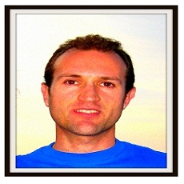
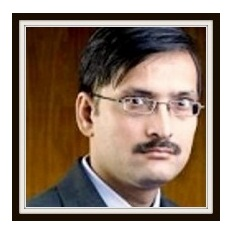
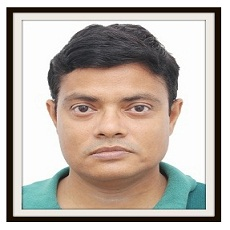

Dr. Danilo Pelusi (Faculty of Communication Sciences, University of Teramo, Coste Sant'Agostino Campus, Teramo, Italy)
Brief Bio: His research is on coding theory and artificial intelligence. Moreover, he is interested in signal processing, patterns recognition, fuzzy logic, neural networks and genetic algorithms. He has developed research activity on control systems optimization and database design at the Astronomic Observatory Collurania "V. Cerulli" of Teramo. Associate editor of IEEE Transactions on Emerging Topics in Computational Intelligence, reviewer for the "UK Modelling & Simulation Society (UKSim)" and of several international journals and conferences, he received the Elsevier Reviewer Recognition. Keynote speaker at several conferences and Guest Editor for Inderscience and Springer, he is editorial board member of international journals and Technical Program Committee member of international conferences. PhD in Computational Astrophysics, he obtained the degree in Physics from the University of Bologna..
Talk Title - Design of Fuzzy Systems to improve the Gravitational Search Algorithm
Abstract: The issue of finding optimal values in optimization problems is an open challenge. On the other hand, there is not any search algorithm able to achieve the global optimum for all the functions. In the literature, various search methods have been proposed. Among search algorithms, the Gravitational Search Algorithm (GSA) is based on the law of gravity. GSA search performances can be improved by adjusting some suitable parameters. This task can be accomplished by means of intelligent techniques such as Fuzzy Logic, Genetic Algorithms, Particle Swarm Optimization and so on. A fascinating challenge is the design of Fuzzy Systems able to tune GSA parameters to improve the search performances at the same computational complexity.
.
Dr. Jonathan H. Chan(Data Science and Engineering Laboratory (D-Lab), School of Information Technology, King Mongkut’s University of Technology Thonburi, Bangkok, Thailand)
Brief Bio: Dr. Jonathan H. Chan is an Associate Professor of Information Technology and currently the Associate Dean for International Relations at the School of Information Technology, King Mongkut's University of Technology Thonburi (KMUTT), Thailand. Jonathan holds a B.A.Sc., M.A.Sc., and Ph.D. degree from the University of Toronto and was a visiting professor there back in 2007, 2009 and 2016; he was also a visiting scientist at The Centre for Applied Genomics at Sick Kids Hospital in Toronto in several occasions. Dr. Chan is a member of the editorial board of Neural Networks (Elsevier), Heliyon (Elsevier), International Journal of Machine Intelligence and Sensory Signal Processing (Inderscience), and Proceedings in Adaptation, Learning and Optimization (Springer). Also, he is a reviewer for a number of refereed international journals including Information Sciences, Applied Soft Computing, Neural Computation & Applications, BMC Bioinformatics, International Journal of Data Mining and Bioinformatics, and Memetic Computing. He has also served on the program, technical and/or advisory committees for numerous major international conferences. Dr. Chan has organized/co-organized many international conferences, and he is the Past-President of the former Asia Pacific Neural Network Assembly (APNNA) and a Governing Board member of the current Asia Pacific Neural Network Society (APNNS). He is a senior member of IEEE and INNS, and a member of ACM and the Professional Engineers of Ontario (PEO). His current research interests are in the interdisciplinary field of data science, including but not limited to intelligent systems, biomedical informatics, and systems biology.
Talk Title - BioNLP and its Applications
Abstract: Biomedical text mining, generally referred to as BioNLP, is the application of data mining and machine learning techniques to extract useful information and knowledge in the biomedical as well as molecular biology literature. As the number of biological and biomedical publications are increasing exponential in PubMed and other indices/repositories, it is paramount to develop better natural language processing (NLP) tools and techniques, especially in conjunction with biological resources. This talk will provide an overview on the development of BioNLP and some recent advances and applications in this field with an emphasis on data mining and machine learning.
.
Dr.Jagdish Chand Bansal(South Asian University, New Delhi, India)
Brief Bio: Dr. Jagdish Chand Bansal is an Assistant Professor at South Asian University New Delhi. Dr. Bansal has obtained his PhD in Mathematics from IIT Roorkee. Before joining SAU New Delhi he has worked as an Assistant Professor at ABV- Indian Institute of Information Technology and Management Gwalior and BITS Pilani. He is the editor in chief of “International Journal of Swarm Intelligence (IJSI)” published by Inderscience. He has edited 9 special issues of various international journals published by Elsevier, Springer and Inderscience. He is also one of the organizers of annual conference series SocProS. He is the general secretary of Soft Computing Research Society. His Primary area of interest is Nature Inspired Optimization Techniques. Recently, he proposed a fission-fusion social structure based optimization algorithm, Spider Monkey Optimization (SMO), which is being applied to various problems from engineering domain. He has published 51 research papers in various international journals/conferences. He has supervised two Ph.D. thesis from ABV-IIITM Gwalior and 3 are in progress from SAU New Delhi. He has received Young Scientist Award 2009 from Gwalior Academy of Mathematical Sciences. He has also received Gold Medal at UG and PG level.
Talk Title - Swarm Intelligence: An Intelligent Way of Problem Solving
Abstract: With the development of advanced technology, computational requirements have become high. Usually, for high computational needs, traditional algorithms become infeasible. In such case, some intelligent way of problem solving is required and swarm intelligence is one of them. Social creatures, like birds, fishes, ants, bees, termites etc, exhibit an intelligent social behavior during the search of food or protecting themselves from predators. This intelligent social behavior is usually, referred as Swarm Intelligence. Researchers have always been fascinated with swarm intelligence and applied this to develop some advanced intelligent algorithms to solve the problems where either traditional approaches fail or infeasible to use. Particle Swarm Optimization (PSO), Ant Colony Optimization (ACO), Artificial Bee Colony Algorithm (ABC), Bacterial Foraging Optimization (BFO) and Spider Monkey Optimization (SMO) are some of the algorithms based on the principles of swarm intelligence. The talk comprises some basic principles of swarm intelligence, and demonstrates how they are applied to develop intelligent algorithms, particularly, PSO and SMO.
.
Dr. Asit Kumar Das(Indian Institute of Engineering Science and Technology, Shibpur, WB, India)
Brief Bio: Dr. A. K. DAS is an Associate Professor at Indian Institute of Engineering Science and Technology, Shibpur, WB, India. Dr. Das has obtained his PhD in Computer Science and Technology from Bengal Engineering and Science University, M.tech. from University College of Science & Technology - Calcutta University and B.tech from University College of Science & Technology - Calcutta University. He had published more that 40 research articles. His research area of interest are Data Mining and Pattern Recognition, Soft Computing, Evolutionary algorithms, Bioinformatics, Social Network, Text Mining, Audio and Video data analysis, Agricultural Data analysis and Crime data Prediction, etc. .
Talk Title - Dynamic Feature Selection using Rough Set Theory and Genetic Algorithm
Abstract: Feature selection is an important task in dynamic environment where volume of dataset grows incrementally. In a dynamic environment, data come in regular interval of time based on which the importance of the features with respect to overall dataset is changed. To select the important set of features in a particular time, whole data may be applied in an efficient feature selection algorithm but this technique degrades the overall efficiency of the system as the same algorithm is applied all the time for the data, which are already examined. To overcome such demerit, newly generated group of data together with the previously selected features of old data are examined for obtaining the resultant features of the whole dataset. As a result, the efficiency and acceptability of the system increases. For this purpose, a group incremental feature selection method using rough set theory and genetic algorithm may be useful for selecting the optimal set of relevant features. Though the time complexity of genetic algorithm is a big issue in big data analytics, it does not affect such developed system as the method is applied after small to moderate volume of data are added into the system..
.
Dr. P. K. Jana(Department of Computer Science and Engineering, Indian Institute of Technology(ISM), Dhanbad, India)
Brief Bio: Dr. Prasanta K. Jana received M. Tech. degree in Computer Science from University of Calcutta, in 1988 and Ph. D. from Jadavpur University in 2000. Currently he is a Professor in the department of Computer Science and Engineering, Indian Institute of Technology(ISM), Dhanbad, India. He has contributed 162 research publications in his credit and co-authored 6 books and 2 book chapters. He has also produced 10 Ph.Ds. As a recognition of his outstanding research contributions, he has been awarded Senior Member of IEEE (The Institute of Electrical and Electronics Engineers, USA) in 2010. He is also the recipient of Canara Bank Research Publication Award in the year 2016. Dr. Jana is in the editorial board of two international journals and acted as referees in many reputed international journals. He has acted as the General Chair of the International Conference RAIT-2012, Co-chair of national conference RAIT-2009 and convener of the workshop WPDC-2008. He has also served as advisory committee and programme committee members of several international conferences. His current research interest includes wireless sensor networks, cloud computing and big data clustering. He visited University of Aizu-Japan, Las Vegas-USA, Imperial college of London-UK, University of Macau and Hong Kong for academic purpose.
Talk Title - Machine Learning Applications for Wireless Sensor networks
Abstract: Machine learning has paid enormous attention for its potential applications in the field of bioinformatics, speech recognition, fraud detection, spam detection, computer vision and advertising networks which require wide variety of tasks including classification, regression and density estimation. In the recent years, machine learning has been successfully applied to address various challenges in wireless sensor networks too. Researchers have explored that neural networks, fuzzy logic, evolutionary algorithms, swarm intelligence, support vector machines and reinforcement learning are very useful machine learning techniques for solving the problems of sensor deployment, data aggregation, energy aware routing, anomaly detection, and localization. In this talk, a survey of machine learning applications in wireless sensor networks will be discussed. This will be followed by a presentation of particle swarm optimization based clustering and routing algorithms in wireless sensor networks..
.
Dr. Satyasai Jagannath Nanda (Malaviya National Institute of Technology, Jaipur, Rajasthan, India)
Brief Bio: Dr. S. J. Nanda is an Assistant Professor in Department of Electronics and Communication Engineering, Malaviya National Institute of Technology, Jaipur, India. Prior to this he has received the PhD degree from School of Electrical Sciences, IIT Bhubaneswar in 2013 and M.Tech degree from Dept. of Electronics and Communication Engg., NIT Rourkela in 2009 respectively. His PhD thesis received the Best thesis award in the field of ‘soft computing’ by SocProS-2015 from IIT Roorkee. He has been awarded best research paper award at IEEE-UPCON-2016 at IIT BHU, Springer-OWT-2017 at MNIT Jaipur. He is the recipient of ‘Sir Visvesvaraya Young Faculty Research Fellows’ by Ministry of Electronics and Information Technology, Govt. of India for year 2017-22. Dr. S. J. Nanda addressed the gathering at IEEE-Congress on Evolutionary Computation held at Sen-Sebastein, Spain during June 2017 and IEEE-Symposium on SHUSER held at University of Technology, Kualalumpur, Malaysia June 2012. Dr. Nanda was awarded the GESP research fellowship by Dept. of Foreign Affairs and International Trade, Govt. of Canada with which he worked at Dept. of Earth Sciences, University of Western Ontario, Canada. Dr. Nanda has published 35 research papers in various international journals and conferences. His article “A survey on nature inspired metaheuristic algorithms for partitional clustering” has received the honor of most cited articles published since 2012 in Journal Swarm and Evolutionary Computation, Elsevier.
Talk Title - Nature inspired meta-heuristics for data clustering
Abstract: The data clustering concept started with K-means algorithm which was initially reported by Lloyd of Bell Telephone laboratories in 1957. Since then several classical partitional clustering algorithms have been reported based on gradient descent approach. The 1995 kick started a new era in cluster analysis with the application of nature inspired meta-heuristics. Since the initial formulation nearly two decades have passed and researchers have developed numerous new algorithms in this field. This talk emphasizes on fundamentals and all major nature inspired meta-heuristic algorithms employed till date for partitional clustering. Further, key issues involve during formulation of various meta-heuristics as a clustering problem are to be highlighted. Potential application areas like image segmentation, Gene expression data analysis and localization in wireless sensor network are to be discussed
.